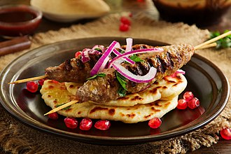

Kebabs

Grilled Meat Kebabs
Tender chunks of marinated meat and fresh vegetables skewered and grilled to perfection. These delicious kebabs are ideal for summer barbecues and make a fun, interactive meal for everyone.
Ingrediants
- 900g beef sirloin, cubed
- 2 bell peppers, chunked
- 1 large red onion, chunked
- 60ml olive oil and lemon juice marinade
- Salt, pepper, and garlic powder to taste
Steps
- Combine olive oil and lemon juice in a bowl with garlic powder, salt, and pepper
- Add beef cubes to marinade and refrigerate for 2 hours
- Preheat barbecue to medium-high heat
- Thread marinated beef, peppers, and onions onto skewers alternating ingredients
- Grill kebabs for 10-12 minutes, turning occasionally until meat is cooked through
- Let rest for 2 minutes before serving
- Serve hot with your favorite sides